17 Distribution per level
These charts draw how the values of each level are spread: summaries (box, violin, extent) and the values themselves (stripplot, beeswarm, dotplot, rug). Use them to compare spreads across levels; they all take the Strip options for placement, width and grouping.
(ns reference.charts-per-level
(:require [fastmath.random :as r]
[fastmath.stats :as stats]
[cljplot2.chart :as chart]
[cljplot2.core :as plot]
[cljplot2.describe :as describe]
[notebook-utils :as nu]))Data: Edgar Anderson’s iris measurements, R datasets package iris (Anderson 1935; Fisher 1936); licence: Part of R (GPL-2 | GPL-3).
(def iris (nu/dataset :iris))| sepal-length | sepal-width | petal-length | petal-width | species |
|---|---|---|---|---|
| 5.1 | 3.5 | 1.4 | 0.2 | setosa |
| 4.9 | 3 | 1.4 | 0.2 | setosa |
| 4.7 | 3.2 | 1.3 | 0.2 | setosa |
| 4.6 | 3.1 | 1.5 | 0.2 | setosa |
| 5 | 3.6 | 1.4 | 0.2 | setosa |
| 5.4 | 3.9 | 1.7 | 0.4 | setosa |
| 4.6 | 3.4 | 1.4 | 0.3 | setosa |
| 5 | 3.4 | 1.5 | 0.2 | setosa |
| 4.4 | 2.9 | 1.4 | 0.2 | setosa |
| 4.9 | 3.1 | 1.5 | 0.1 | setosa |
| 5.4 | 3.7 | 1.5 | 0.2 | setosa |
| 4.8 | 3.4 | 1.6 | 0.2 | setosa |
| 4.8 | 3 | 1.4 | 0.1 | setosa |
| 4.3 | 3 | 1.1 | 0.1 | setosa |
| 5.8 | 4 | 1.2 | 0.2 | setosa |
| 5.7 | 4.4 | 1.5 | 0.4 | setosa |
| 5.4 | 3.9 | 1.3 | 0.4 | setosa |
| 5.1 | 3.5 | 1.4 | 0.3 | setosa |
| 5.7 | 3.8 | 1.7 | 0.3 | setosa |
| 5.1 | 3.8 | 1.5 | 0.3 | setosa |
| 5.4 | 3.4 | 1.7 | 0.2 | setosa |
| 5.1 | 3.7 | 1.5 | 0.4 | setosa |
| 4.6 | 3.6 | 1 | 0.2 | setosa |
| 5.1 | 3.3 | 1.7 | 0.5 | setosa |
| 4.8 | 3.4 | 1.9 | 0.2 | setosa |
| 5 | 3 | 1.6 | 0.2 | setosa |
| 5 | 3.4 | 1.6 | 0.4 | setosa |
| 5.2 | 3.5 | 1.5 | 0.2 | setosa |
| 5.2 | 3.4 | 1.4 | 0.2 | setosa |
| 4.7 | 3.2 | 1.6 | 0.2 | setosa |
| 4.8 | 3.1 | 1.6 | 0.2 | setosa |
| 5.4 | 3.4 | 1.5 | 0.4 | setosa |
| 5.2 | 4.1 | 1.5 | 0.1 | setosa |
| 5.5 | 4.2 | 1.4 | 0.2 | setosa |
| 4.9 | 3.1 | 1.5 | 0.2 | setosa |
| 5 | 3.2 | 1.2 | 0.2 | setosa |
| 5.5 | 3.5 | 1.3 | 0.2 | setosa |
| 4.9 | 3.6 | 1.4 | 0.1 | setosa |
| 4.4 | 3 | 1.3 | 0.2 | setosa |
| 5.1 | 3.4 | 1.5 | 0.2 | setosa |
| 5 | 3.5 | 1.3 | 0.3 | setosa |
| 4.5 | 2.3 | 1.3 | 0.3 | setosa |
| 4.4 | 3.2 | 1.3 | 0.2 | setosa |
| 5 | 3.5 | 1.6 | 0.6 | setosa |
| 5.1 | 3.8 | 1.9 | 0.4 | setosa |
| 4.8 | 3 | 1.4 | 0.3 | setosa |
| 5.1 | 3.8 | 1.6 | 0.2 | setosa |
| 4.6 | 3.2 | 1.4 | 0.2 | setosa |
| 5.3 | 3.7 | 1.5 | 0.2 | setosa |
| 5 | 3.3 | 1.4 | 0.2 | setosa |
| 7 | 3.2 | 4.7 | 1.4 | versicolor |
| 6.4 | 3.2 | 4.5 | 1.5 | versicolor |
| 6.9 | 3.1 | 4.9 | 1.5 | versicolor |
| 5.5 | 2.3 | 4 | 1.3 | versicolor |
| 6.5 | 2.8 | 4.6 | 1.5 | versicolor |
| 5.7 | 2.8 | 4.5 | 1.3 | versicolor |
| 6.3 | 3.3 | 4.7 | 1.6 | versicolor |
| 4.9 | 2.4 | 3.3 | 1 | versicolor |
| 6.6 | 2.9 | 4.6 | 1.3 | versicolor |
| 5.2 | 2.7 | 3.9 | 1.4 | versicolor |
| 5 | 2 | 3.5 | 1 | versicolor |
| 5.9 | 3 | 4.2 | 1.5 | versicolor |
| 6 | 2.2 | 4 | 1 | versicolor |
| 6.1 | 2.9 | 4.7 | 1.4 | versicolor |
| 5.6 | 2.9 | 3.6 | 1.3 | versicolor |
| 6.7 | 3.1 | 4.4 | 1.4 | versicolor |
| 5.6 | 3 | 4.5 | 1.5 | versicolor |
| 5.8 | 2.7 | 4.1 | 1 | versicolor |
| 6.2 | 2.2 | 4.5 | 1.5 | versicolor |
| 5.6 | 2.5 | 3.9 | 1.1 | versicolor |
| 5.9 | 3.2 | 4.8 | 1.8 | versicolor |
| 6.1 | 2.8 | 4 | 1.3 | versicolor |
| 6.3 | 2.5 | 4.9 | 1.5 | versicolor |
| 6.1 | 2.8 | 4.7 | 1.2 | versicolor |
| 6.4 | 2.9 | 4.3 | 1.3 | versicolor |
| 6.6 | 3 | 4.4 | 1.4 | versicolor |
| 6.8 | 2.8 | 4.8 | 1.4 | versicolor |
| 6.7 | 3 | 5 | 1.7 | versicolor |
| 6 | 2.9 | 4.5 | 1.5 | versicolor |
| 5.7 | 2.6 | 3.5 | 1 | versicolor |
| 5.5 | 2.4 | 3.8 | 1.1 | versicolor |
| 5.5 | 2.4 | 3.7 | 1 | versicolor |
| 5.8 | 2.7 | 3.9 | 1.2 | versicolor |
| 6 | 2.7 | 5.1 | 1.6 | versicolor |
| 5.4 | 3 | 4.5 | 1.5 | versicolor |
| 6 | 3.4 | 4.5 | 1.6 | versicolor |
| 6.7 | 3.1 | 4.7 | 1.5 | versicolor |
| 6.3 | 2.3 | 4.4 | 1.3 | versicolor |
| 5.6 | 3 | 4.1 | 1.3 | versicolor |
| 5.5 | 2.5 | 4 | 1.3 | versicolor |
| 5.5 | 2.6 | 4.4 | 1.2 | versicolor |
| 6.1 | 3 | 4.6 | 1.4 | versicolor |
| 5.8 | 2.6 | 4 | 1.2 | versicolor |
| 5 | 2.3 | 3.3 | 1 | versicolor |
| 5.6 | 2.7 | 4.2 | 1.3 | versicolor |
| 5.7 | 3 | 4.2 | 1.2 | versicolor |
| 5.7 | 2.9 | 4.2 | 1.3 | versicolor |
| 6.2 | 2.9 | 4.3 | 1.3 | versicolor |
| 5.1 | 2.5 | 3 | 1.1 | versicolor |
| 5.7 | 2.8 | 4.1 | 1.3 | versicolor |
| … | … | … | … | … |
Data: Motor Trend car road tests (1974), R datasets package mtcars (Henderson & Velleman 1981); licence: Part of R (GPL-2 | GPL-3).
(def mtcars (nu/dataset :mtcars))| model | mpg | cyl | disp | hp | drat | wt | qsec | vs | am | gear | carb |
|---|---|---|---|---|---|---|---|---|---|---|---|
| Mazda RX4 | 21 | 6 | 160 | 110 | 3.9 | 2.62 | 16.46 | 0 | 1 | 4 | 4 |
| Mazda RX4 Wag | 21 | 6 | 160 | 110 | 3.9 | 2.875 | 17.02 | 0 | 1 | 4 | 4 |
| Datsun 710 | 22.8 | 4 | 108 | 93 | 3.85 | 2.32 | 18.61 | 1 | 1 | 4 | 1 |
| Hornet 4 Drive | 21.4 | 6 | 258 | 110 | 3.08 | 3.215 | 19.44 | 1 | 0 | 3 | 1 |
| Hornet Sportabout | 18.7 | 8 | 360 | 175 | 3.15 | 3.44 | 17.02 | 0 | 0 | 3 | 2 |
| Valiant | 18.1 | 6 | 225 | 105 | 2.76 | 3.46 | 20.22 | 1 | 0 | 3 | 1 |
| Duster 360 | 14.3 | 8 | 360 | 245 | 3.21 | 3.57 | 15.84 | 0 | 0 | 3 | 4 |
| Merc 240D | 24.4 | 4 | 146.7 | 62 | 3.69 | 3.19 | 20 | 1 | 0 | 4 | 2 |
| Merc 230 | 22.8 | 4 | 140.8 | 95 | 3.92 | 3.15 | 22.9 | 1 | 0 | 4 | 2 |
| Merc 280 | 19.2 | 6 | 167.6 | 123 | 3.92 | 3.44 | 18.3 | 1 | 0 | 4 | 4 |
| Merc 280C | 17.8 | 6 | 167.6 | 123 | 3.92 | 3.44 | 18.9 | 1 | 0 | 4 | 4 |
| Merc 450SE | 16.4 | 8 | 275.8 | 180 | 3.07 | 4.07 | 17.4 | 0 | 0 | 3 | 3 |
| Merc 450SL | 17.3 | 8 | 275.8 | 180 | 3.07 | 3.73 | 17.6 | 0 | 0 | 3 | 3 |
| Merc 450SLC | 15.2 | 8 | 275.8 | 180 | 3.07 | 3.78 | 18 | 0 | 0 | 3 | 3 |
| Cadillac Fleetwood | 10.4 | 8 | 472 | 205 | 2.93 | 5.25 | 17.98 | 0 | 0 | 3 | 4 |
| Lincoln Continental | 10.4 | 8 | 460 | 215 | 3 | 5.424 | 17.82 | 0 | 0 | 3 | 4 |
| Chrysler Imperial | 14.7 | 8 | 440 | 230 | 3.23 | 5.345 | 17.42 | 0 | 0 | 3 | 4 |
| Fiat 128 | 32.4 | 4 | 78.7 | 66 | 4.08 | 2.2 | 19.47 | 1 | 1 | 4 | 1 |
| Honda Civic | 30.4 | 4 | 75.7 | 52 | 4.93 | 1.615 | 18.52 | 1 | 1 | 4 | 2 |
| Toyota Corolla | 33.9 | 4 | 71.1 | 65 | 4.22 | 1.835 | 19.9 | 1 | 1 | 4 | 1 |
| Toyota Corona | 21.5 | 4 | 120.1 | 97 | 3.7 | 2.465 | 20.01 | 1 | 0 | 3 | 1 |
| Dodge Challenger | 15.5 | 8 | 318 | 150 | 2.76 | 3.52 | 16.87 | 0 | 0 | 3 | 2 |
| AMC Javelin | 15.2 | 8 | 304 | 150 | 3.15 | 3.435 | 17.3 | 0 | 0 | 3 | 2 |
| Camaro Z28 | 13.3 | 8 | 350 | 245 | 3.73 | 3.84 | 15.41 | 0 | 0 | 3 | 4 |
| Pontiac Firebird | 19.2 | 8 | 400 | 175 | 3.08 | 3.845 | 17.05 | 0 | 0 | 3 | 2 |
| Fiat X1-9 | 27.3 | 4 | 79 | 66 | 4.08 | 1.935 | 18.9 | 1 | 1 | 4 | 1 |
| Porsche 914-2 | 26 | 4 | 120.3 | 91 | 4.43 | 2.14 | 16.7 | 0 | 1 | 5 | 2 |
| Lotus Europa | 30.4 | 4 | 95.1 | 113 | 3.77 | 1.513 | 16.9 | 1 | 1 | 5 | 2 |
| Ford Pantera L | 15.8 | 8 | 351 | 264 | 4.22 | 3.17 | 14.5 | 0 | 1 | 5 | 4 |
| Ferrari Dino | 19.7 | 6 | 145 | 175 | 3.62 | 2.77 | 15.5 | 0 | 1 | 5 | 6 |
| Maserati Bora | 15 | 8 | 301 | 335 | 3.54 | 3.57 | 14.6 | 0 | 1 | 5 | 8 |
| Volvo 142E | 21.4 | 4 | 121 | 109 | 4.11 | 2.78 | 18.6 | 1 | 1 | 4 | 2 |
17.1 Box plots
chart/box draws a box per level and group: the quartiles, the median, whiskers and outliers. Use it to compare the spread of many levels at a glance. By default the chart computes the statistics from the values:
:mapping:x– The values of horizontal boxes, or the levels of vertical ones;:stat :identityreads no values.:y– The levels of horizontal boxes, or the values of vertical ones; with no levels the chart draws one box.:color– Splits the rows into groups, each a box in its own fill colour.:pattern– Splits the rows into groups, each a box with its own fill pattern.:shape– Splits the rows into groups, each with its own outlier shape.:size– Splits the rows into groups, each with its own outlier size.:group– Splits the rows into groups that look the same, each its own box.
(plot/render-image {:data iris
:mapping {:x :sepal-width :y :species :color :species}
:charts [(chart/box)]
:scales {:y {:reverse true}}
:legend false}
{:width 600 :height 300})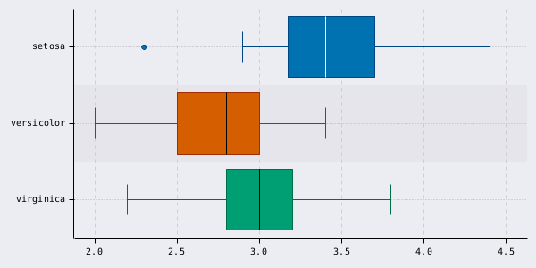
With :stat :identity the chart reads the statistics from one row per level and group instead:
:mapping:lower– With:stat :identity, a row's statistic of its level and group: the lower whisker end.:q1– With:stat :identity, a row's statistic of its level and group: the first quartile.:median– With:stat :identity, a row's statistic of its level and group: the median.:q3– With:stat :identity, a row's statistic of its level and group: the third quartile.:upper– With:stat :identity, a row's statistic of its level and group: the upper whisker end.:outliers– With:stat :identity, a row's statistic of its level and group: a collection of outlier values, optional.:mean– With:stat :identity, a row's statistic of its level and group: the mean, which the:meanoption needs.:n– With:stat :identity, a row's statistic of its level and group: the count, which:varwidthand:n-labelneed.
(def summaries [{:site "north" :lower 2.1 :q1 3.4 :median 4.0 :q3 4.9 :upper 6.3 :outliers [7.4 8.0] :mean 4.3 :n 40}
{:site "south" :lower 1.0 :q1 2.2 :median 2.9 :q3 3.3 :upper 4.4 :outliers [0.2] :mean 2.8 :n 15}
{:site "east" :lower 3.0 :q1 4.1 :median 5.2 :q3 5.8 :upper 7.0 :outliers [] :mean 5.0 :n 90}])| upper | q1 | q3 | mean | site | n | outliers | median | lower |
|---|---|---|---|---|---|---|---|---|
| 6.3 | 3.4 | 4.9 | 4.3 | north | 40 | [7.4 8.0] | 4.0 | 2.1 |
| 4.4 | 2.2 | 3.3 | 2.8 | south | 15 | [0.2] | 2.9 | 1.0 |
| 7.0 | 4.1 | 5.8 | 5.0 | east | 90 | [] | 5.2 | 3.0 |
(plot/render-image {:data summaries
:mapping {:y :site :lower :lower :q1 :q1 :median :median :q3 :q3 :upper :upper
:outliers :outliers :mean :mean :n :n}
:charts [(chart/box {:stat :identity :mean true :varwidth true})]
:scales {:y {:reverse true}}
:labels {:x "value"}}
{:width 600 :height 280})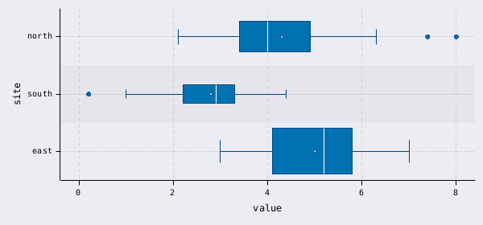
These options style the boxes and outliers and pick what the chart draws. The plots below show rear axle ratios, where the 4- and 8-cylinder groups have outliers: a custom style with the mean marker, no outliers with widths by count, and the Tufte variant:
(plot/render-image (plot/arrange [{:data mtcars
:mapping {:x :drat :y :cyl}
:charts [(chart/box {:color [230 160 60] :stroke-color :black :stroke-width 2 :shape \x :size 9
:mean true})]
:scales {:y {:type :categorical :reverse true}}
:labels {:title "style, :mean true"}}
{:data mtcars
:mapping {:x :drat :y :cyl}
:charts [(chart/box {:outliers false :varwidth true})]
:scales {:y {:type :categorical :reverse true}}
:labels {:title ":outliers false, :varwidth"}}
{:data mtcars
:mapping {:x :drat :y :cyl}
:charts [(chart/box {:variant :tufte})]
:scales {:y {:type :categorical :reverse true}}
:labels {:title ":variant :tufte"}}]
{:columns 3})
{:width 1000 :height 300})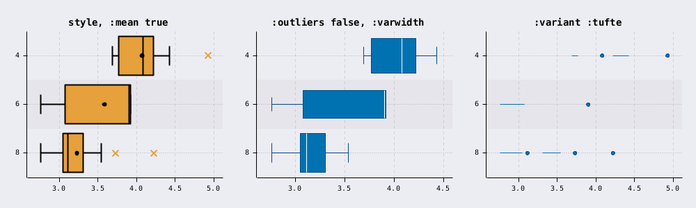
On the right :padding widens the value axis by 40% of the values’ span on each side; the left panel keeps the default:
(plot/render-image (plot/arrange [{:data mtcars
:mapping {:x :drat :y :cyl}
:charts [(chart/box)]
:scales {:y {:type :categorical :reverse true}}
:labels {:title "default padding"}}
{:data mtcars
:mapping {:x :drat :y :cyl}
:charts [(chart/box {:padding {:x [0.4 0.4]}})]
:scales {:y {:type :categorical :reverse true}}
:labels {:title ":padding {:x [0.4 0.4]}"}}]
{:columns 2})
{:width 900 :height 280})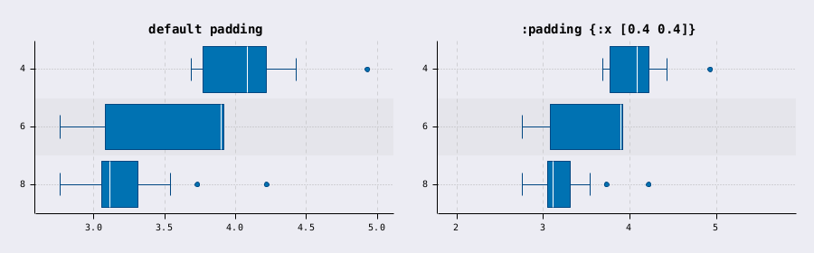
17.2 Violin plots
chart/violin draws a kernel density estimate of each level’s values, mirrored around its centre line, with inner marks, a small box by default. Use it to see the shape of a distribution, e.g. two peaks a box plot hides.
:mapping:x– The values of horizontal violins, or the levels of vertical ones.:y– The levels of horizontal violins, or the values of vertical ones; with no levels the chart draws one violin.:color– Splits the rows into groups, each a violin in its own fill colour.:pattern– Splits the rows into groups, each a violin with its own fill pattern.:group– Splits the rows into groups that look the same, each its own violin.
(plot/render-image {:data iris
:mapping {:x :species :y :petal-length :color :species}
:charts [(chart/violin)]
:legend false}
{:width 600 :height 320})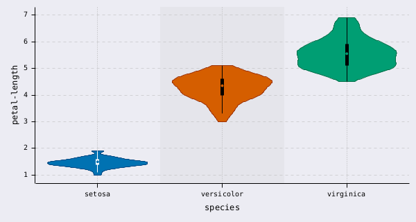
These options style the violins and set the density estimate, the widths and the inner marks. The panels below pair a bandwidth, a reach past the data and a width scale with three inner marks:
(plot/render-image (plot/arrange [{:data iris
:mapping {:x :species :y :petal-length}
:charts [(chart/violin {:bandwidth 0.1 :inner :quartiles})]
:labels {:title ":bandwidth 0.1, :inner :quartiles"}}
{:data iris
:mapping {:x :species :y :petal-length}
:charts [(chart/violin {:cut 2 :inner :rug :inner-color [200 40 40]})]
:labels {:title ":cut 2, :inner :rug"}}
{:data mtcars
:mapping {:x :cyl :y :mpg}
:charts [(chart/violin {:scale :count :inner :points})]
:scales {:x {:type :categorical}}
:labels {:title ":scale :count, :inner :points"}}]
{:columns 3})
{:width 1000 :height 320})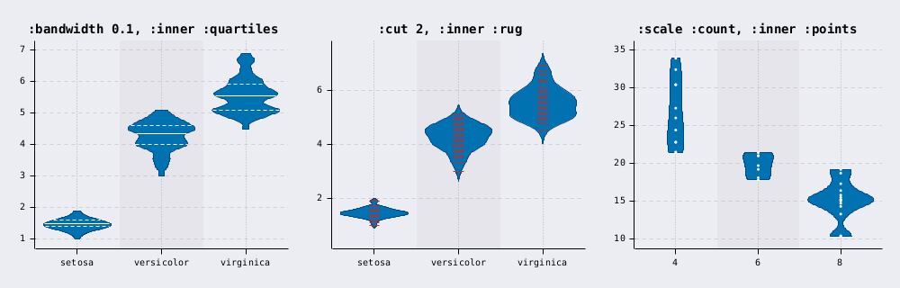
A theme sets the inner marks’ sizes and the quartile dash; below, a wider inner box with a bigger median and dotted quartiles:
[:theme :chart :violin], not options:inner-box-width(default5.0) – The width of the inner box, the quartile bar of:inner :box, in pixels.:inner-median-size(default4.0) – The diameter of the median dot of:inner :box, in pixels.:inner-quartile-dash(default[4.0 3.0]) – The dash style of the quartile lines of:inner :quartiles.:inner-rug-width(default1.0) – The line width of the ticks of:inner :rug, in pixels.:inner-point-size(default3.0) – The diameter of the points of:inner :points, in pixels.
(plot/render-image (plot/arrange [{:data iris
:mapping {:x :species :y :petal-length}
:charts [(chart/violin)]
:theme {:chart {:violin {:inner-box-width 10 :inner-median-size 8}}}
:labels {:title "wider inner box, bigger median"}}
{:data iris
:mapping {:x :species :y :petal-length}
:charts [(chart/violin {:inner :quartiles})]
:theme {:chart {:violin {:inner-quartile-dash [1.0 2.0]}}}
:labels {:title "dotted quartiles"}}]
{:columns 2})
{:width 800 :height 320})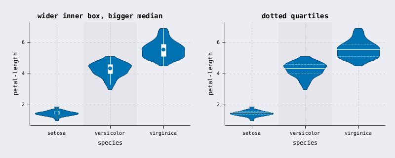
The left panel sets a fill and outline. The middle one evaluates the Epanechnikov kernel at only 8 points, so its outline is coarse. The right one, on mtcars by cylinders, sets :varwidth and :padding:
(plot/render-image (plot/arrange [{:data iris
:mapping {:x :species :y :petal-length}
:charts [(chart/violin {:color [230 160 60] :stroke-color :black :stroke-width 2})]
:labels {:title "fill and outline"}}
{:data iris
:mapping {:x :species :y :petal-length}
:charts [(chart/violin {:kernel :epanechnikov :n 8})]
:labels {:title ":kernel :epanechnikov, :n 8"}}
{:data mtcars
:mapping {:x :cyl :y :mpg}
:charts [(chart/violin {:varwidth true :padding {:y [0.3 0.3]}})]
:scales {:x {:type :categorical}}
:labels {:title ":varwidth, :padding"}}]
{:columns 3})
{:width 1000 :height 320})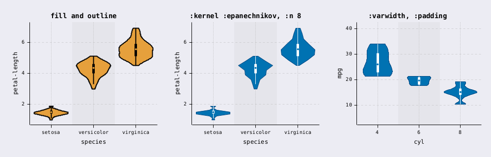
The panels show each :scale on mtcars by gears (15, 12 and 5 cars). With areas by count the five-gear violin shrinks:
(plot/render-image (plot/arrange [{:data mtcars
:mapping {:x :gear :y :mpg}
:charts [(chart/violin {:scale :width})]
:scales {:x {:type :categorical}}
:labels {:title ":scale :width"}}
{:data mtcars
:mapping {:x :gear :y :mpg}
:charts [(chart/violin {:scale :area})]
:scales {:x {:type :categorical}}
:labels {:title ":scale :area"}}
{:data mtcars
:mapping {:x :gear :y :mpg}
:charts [(chart/violin {:scale :count})]
:scales {:x {:type :categorical}}
:labels {:title ":scale :count"}}]
{:columns 3})
{:width 1000 :height 300})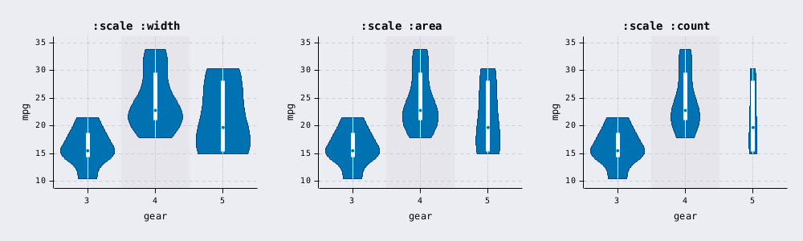
The panels show each :inner mark in turn:
(plot/render-image (plot/arrange [{:data iris :mapping {:x :species :y :petal-length}
:charts [(chart/violin {:inner :box})] :labels {:title ":inner :box"}}
{:data iris :mapping {:x :species :y :petal-length}
:charts [(chart/violin {:inner :quartiles})] :labels {:title ":quartiles"}}
{:data iris :mapping {:x :species :y :petal-length}
:charts [(chart/violin {:inner :rug})] :labels {:title ":rug"}}
{:data iris :mapping {:x :species :y :petal-length}
:charts [(chart/violin {:inner :points})] :labels {:title ":points"}}
{:data iris :mapping {:x :species :y :petal-length}
:charts [(chart/violin {:inner :none})] :labels {:title ":none"}}]
{:columns 5})
{:width 1000 :height 300})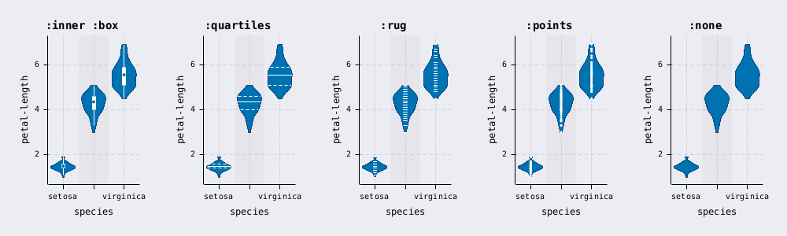
17.3 Error bars
chart/extent draws an interval per level and group, computed from the values - their range, a confidence interval, quantiles or a bootstrap estimate - with a mark at its centre. Use it for error bars, alone or over bars and points.
:mapping:x– The values of horizontal intervals, or the levels of vertical ones.:y– The levels of horizontal intervals, or the values of vertical ones; with no levels the chart draws one interval.:color– Splits the rows into groups, each with its own interval colour.:shape– Splits the rows into groups, each with its own centre mark shape.:size– Splits the rows into groups, each with its own centre mark size.:group– Splits the rows into groups that look the same, each its own interval beside the others of its level.
(plot/render-image {:data iris
:mapping {:x :sepal-length :y :species}
:charts [(chart/extent)]
:scales {:y {:reverse true}}}
{:width 600 :height 280})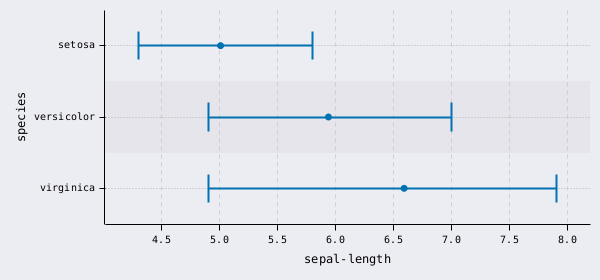
These options style the intervals and pick the method that computes them. The panels show :stddev in a custom style, the 10th to 90th percentiles without a centre, and a seeded bootstrap of the mean:
(plot/render-image (plot/arrange [{:data iris
:mapping {:x :sepal-length :y :species}
:charts [(chart/extent {:method :stddev :color [200 80 40] :line-width 4 :shape \s})]
:scales {:y {:reverse true}}
:labels {:title ":method :stddev"}}
{:data iris
:mapping {:x :sepal-length :y :species}
:charts [(chart/extent {:method :percentile :method-args [10.0 90.0] :center :none})]
:scales {:y {:reverse true}}
:labels {:title "10-90 percentiles, no centre"}}
{:data iris
:mapping {:x :sepal-length :y :species}
:charts [(chart/extent {:method :bootstrap-percentile :rng (r/rng :mersenne 3)})]
:scales {:y {:reverse true}}
:labels {:title "bootstrap mean"}}]
{:columns 3})
{:width 1000 :height 300})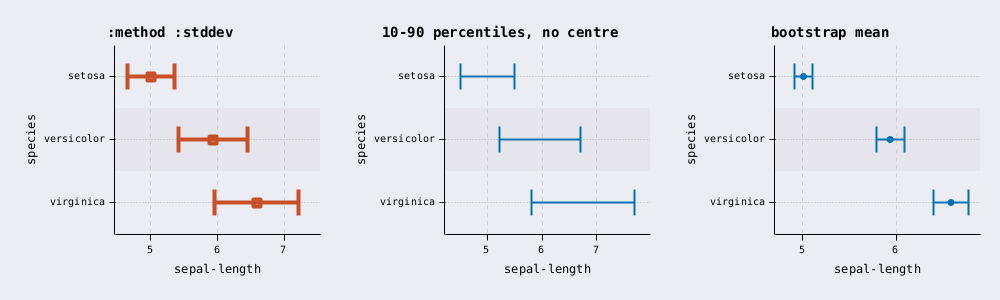
The plot below draws every method on setosa sepal lengths, a level each: the range, spreads around the mean (:mad around the median), quantile intervals, Tukey’s whisker ends and fences, the mean’s confidence interval and seeded bootstrap intervals:
(def setosa (filter #(= "setosa" (:species %)) iris))| sepal-length | sepal-width | petal-length | petal-width | species |
|---|---|---|---|---|
| 5.1 | 3.5 | 1.4 | 0.2 | setosa |
| 4.9 | 3 | 1.4 | 0.2 | setosa |
| 4.7 | 3.2 | 1.3 | 0.2 | setosa |
| 4.6 | 3.1 | 1.5 | 0.2 | setosa |
| 5 | 3.6 | 1.4 | 0.2 | setosa |
| 5.4 | 3.9 | 1.7 | 0.4 | setosa |
| 4.6 | 3.4 | 1.4 | 0.3 | setosa |
| 5 | 3.4 | 1.5 | 0.2 | setosa |
| 4.4 | 2.9 | 1.4 | 0.2 | setosa |
| 4.9 | 3.1 | 1.5 | 0.1 | setosa |
| 5.4 | 3.7 | 1.5 | 0.2 | setosa |
| 4.8 | 3.4 | 1.6 | 0.2 | setosa |
| 4.8 | 3 | 1.4 | 0.1 | setosa |
| 4.3 | 3 | 1.1 | 0.1 | setosa |
| 5.8 | 4 | 1.2 | 0.2 | setosa |
| 5.7 | 4.4 | 1.5 | 0.4 | setosa |
| 5.4 | 3.9 | 1.3 | 0.4 | setosa |
| 5.1 | 3.5 | 1.4 | 0.3 | setosa |
| 5.7 | 3.8 | 1.7 | 0.3 | setosa |
| 5.1 | 3.8 | 1.5 | 0.3 | setosa |
| 5.4 | 3.4 | 1.7 | 0.2 | setosa |
| 5.1 | 3.7 | 1.5 | 0.4 | setosa |
| 4.6 | 3.6 | 1 | 0.2 | setosa |
| 5.1 | 3.3 | 1.7 | 0.5 | setosa |
| 4.8 | 3.4 | 1.9 | 0.2 | setosa |
| 5 | 3 | 1.6 | 0.2 | setosa |
| 5 | 3.4 | 1.6 | 0.4 | setosa |
| 5.2 | 3.5 | 1.5 | 0.2 | setosa |
| 5.2 | 3.4 | 1.4 | 0.2 | setosa |
| 4.7 | 3.2 | 1.6 | 0.2 | setosa |
| 4.8 | 3.1 | 1.6 | 0.2 | setosa |
| 5.4 | 3.4 | 1.5 | 0.4 | setosa |
| 5.2 | 4.1 | 1.5 | 0.1 | setosa |
| 5.5 | 4.2 | 1.4 | 0.2 | setosa |
| 4.9 | 3.1 | 1.5 | 0.2 | setosa |
| 5 | 3.2 | 1.2 | 0.2 | setosa |
| 5.5 | 3.5 | 1.3 | 0.2 | setosa |
| 4.9 | 3.6 | 1.4 | 0.1 | setosa |
| 4.4 | 3 | 1.3 | 0.2 | setosa |
| 5.1 | 3.4 | 1.5 | 0.2 | setosa |
| 5 | 3.5 | 1.3 | 0.3 | setosa |
| 4.5 | 2.3 | 1.3 | 0.3 | setosa |
| 4.4 | 3.2 | 1.3 | 0.2 | setosa |
| 5 | 3.5 | 1.6 | 0.6 | setosa |
| 5.1 | 3.8 | 1.9 | 0.4 | setosa |
| 4.8 | 3 | 1.4 | 0.3 | setosa |
| 5.1 | 3.8 | 1.6 | 0.2 | setosa |
| 4.6 | 3.2 | 1.4 | 0.2 | setosa |
| 5.3 | 3.7 | 1.5 | 0.2 | setosa |
| 5 | 3.3 | 1.4 | 0.2 | setosa |
(plot/render-image {:data setosa
:mapping {:x :sepal-length}
:charts (vec (for [m [:min-max :stddev :sem :mad :percentile :quantile :pi :hpdi :percentile-bc
:percentile-bca :adjacent :inner-fence :outer-fence :ci :bootstrap-normal
:bootstrap-percentile :bootstrap-basic :bootstrap-bc :bootstrap-bca
:bootstrap-studentized :bootstrap-t :bootstrap-mad-median]]
(chart/extent {:method m :rng (r/rng :mersenne 5)
:mapping {:y (constantly (name m))}})))
:scales {:y {:reverse true}}
:labels {:x "sepal length [cm]"}}
{:width 700 :height 600})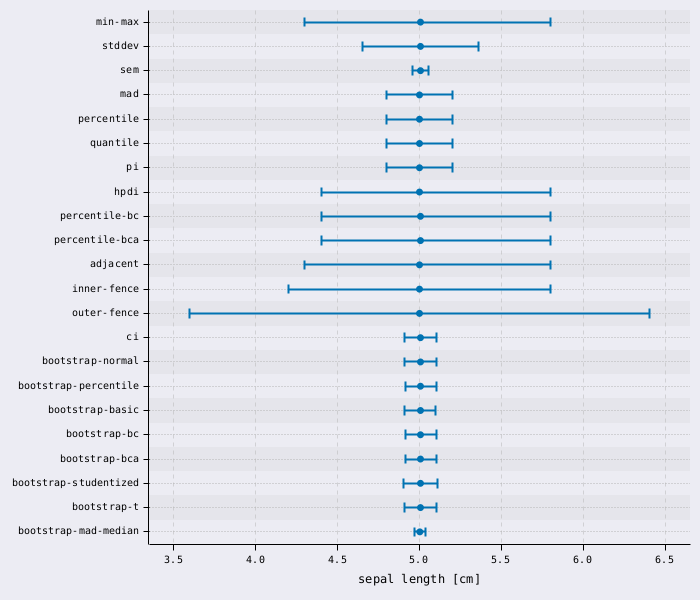
On the left the bootstrap resamples the median instead of the mean (compare the “bootstrap mean” panel above), and :size enlarges its centre mark. On the right :padding widens the value axis:
(plot/render-image (plot/arrange [{:data iris
:mapping {:x :sepal-length :y :species}
:charts [(chart/extent {:method :bootstrap-percentile :rng (r/rng :mersenne 3)
:statistic stats/median :size 12})]
:scales {:y {:reverse true}}
:labels {:title ":statistic stats/median"}}
{:data iris
:mapping {:x :sepal-length :y :species}
:charts [(chart/extent {:padding {:x [0.5 0.5]}})]
:scales {:y {:reverse true}}
:labels {:title ":padding {:x [0.5 0.5]}"}}]
{:columns 2})
{:width 800 :height 300})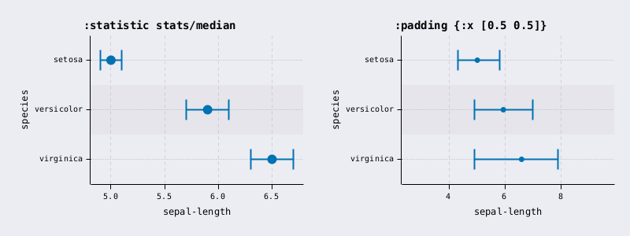
17.4 Strip plots
chart/stripplot draws every value as a point across its level’s strip, jittered so equal values don’t hide each other. Use it for small samples, where each value counts.
:mapping:x– The values of horizontal strips, or the levels of vertical ones.:y– The levels of horizontal strips, or the values of vertical ones; with no levels the chart draws one strip.:color– Splits the rows into groups, each in its own point colour.:shape– Splits the rows into groups, each with its own point shape.:size– Splits the rows into groups, each with its own point size.:group– Splits the rows into groups that look the same, dodged as other groups.
(plot/render-image {:data iris
:mapping {:x :sepal-length :y :species :color :species}
:charts [(chart/stripplot {:rng (r/rng :mersenne 1)})]
:scales {:y {:reverse true}}
:legend false}
{:width 600 :height 280})
These options style the points and set the jitter, seeded here so every build draws the same image. The panels show no jitter, a wide jitter of outlined squares, and :padding:
(plot/render-image (plot/arrange [{:data iris
:mapping {:x :sepal-length :y :species}
:charts [(chart/stripplot {:jitter 0})]
:scales {:y {:reverse true}}
:labels {:title ":jitter 0"}}
{:data iris
:mapping {:x :sepal-length :y :species}
:charts [(chart/stripplot {:jitter 0.8 :size 8 :shape \S :color [200 80 40 90]
:stroke-color [120 40 20] :stroke-width 1.5
:rng (r/rng :mersenne 1)})]
:scales {:y {:reverse true}}
:labels {:title ":jitter 0.8, outlined squares"}}
{:data iris
:mapping {:x :sepal-length :y :species}
:charts [(chart/stripplot {:padding {:x [0.3 0.3]} :rng (r/rng :mersenne 1)})]
:scales {:y {:reverse true}}
:labels {:title ":padding {:x [0.3 0.3]}"}}]
{:columns 3})
{:width 1000 :height 280})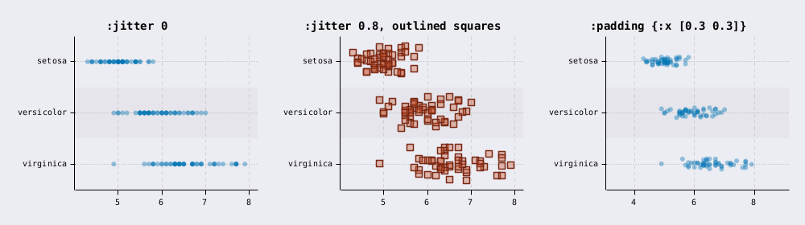
17.5 Beeswarm plots
chart/beeswarm draws every value as a point, packed across the strip so points don’t overlap where the slot has room. Use it when each value counts and the swarm’s width should show the density.
:mapping:x– The values of horizontal swarms, or the levels of vertical ones.:y– The levels of horizontal swarms, or the values of vertical ones; with no levels the chart draws one swarm.:color– Splits the rows into groups, each in its own point colour.:shape– Splits the rows into groups, each with its own point shape.:size– Splits the rows into groups, each with its own point size.:group– Splits the rows into groups that look the same, dodged as other groups.
(plot/render-image {:data iris
:mapping {:x :species :y :petal-length :color :species}
:charts [(chart/beeswarm)]
:legend false}
{:width 600 :height 320})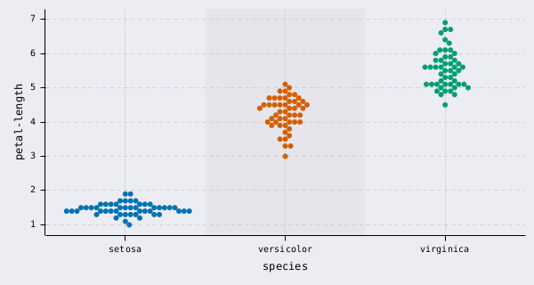
These options style the points and set how the chart packs them. The panels show large points left to overflow their slot and squeezed into it, and the packing around their values:
(plot/render-image (plot/arrange [{:data iris
:mapping {:x :species :y :sepal-width}
:charts [(chart/beeswarm {:size 14 :fit false})]
:labels {:title ":size 14, :fit false"}}
{:data iris
:mapping {:x :species :y :sepal-width}
:charts [(chart/beeswarm {:size 14})]
:labels {:title ":size 14, :fit true"}}
{:data iris
:mapping {:x :species :y :sepal-width}
:charts [(chart/beeswarm {:pack :around :stroke-color :white})]
:labels {:title ":pack :around"}}]
{:columns 3})
{:width 1000 :height 320})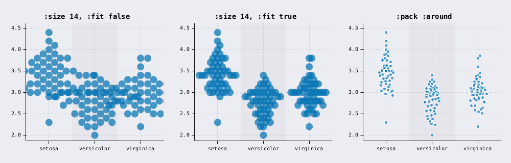
The left panel draws outlined triangles in the default packing, where points move only across the value axis; the right one sets :padding:
(plot/render-image (plot/arrange [{:data iris
:mapping {:x :species :y :sepal-width}
:charts [(chart/beeswarm {:color [200 80 40 160] :shape \^ :stroke-color :black
:stroke-width 0.5 :pack :across})]
:labels {:title "triangles, outlined, :pack :across"}}
{:data iris
:mapping {:x :species :y :sepal-width}
:charts [(chart/beeswarm {:padding {:y [0.4 0.4]}})]
:labels {:title ":padding {:y [0.4 0.4]}"}}]
{:columns 2})
{:width 900 :height 320})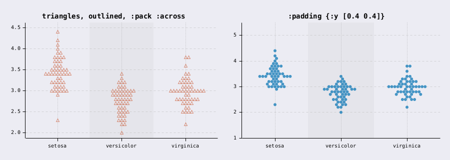
17.6 Dot plots
chart/dotplot bins the values along the value axis and stacks a dot per value in its bin (Wilkinson’s dot plot). Use it to show a distribution’s shape while every value stays countable.
:mapping:x– The values of horizontal dot plots, or the levels of vertical ones.:y– The levels of horizontal dot plots, or the values of vertical ones; with no levels the chart draws one dot plot.:color– Splits the rows into groups, each in its own point colour.:shape– Splits the rows into groups, each with its own point shape.:size– Splits the rows into groups, each with its own point size.:group– Splits the rows into groups that look the same, sharing stacks unless dodged.
(plot/render-image {:data mtcars
:mapping {:x :mpg}
:charts [(chart/dotplot {:binwidth 1.5})]}
{:width 600 :height 280})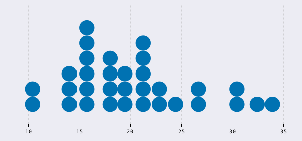
These options style the dots and set how the chart bins and stacks them. The panels show fixed bins, stacks centred on their slots, and each dot at its own value:
(plot/render-image (plot/arrange [{:data mtcars
:mapping {:x :mpg}
:charts [(chart/dotplot {:method :histogram :binwidth 2 :origin 10})]
:labels {:title ":method :histogram"}}
{:data mtcars
:mapping {:x :mpg}
:charts [(chart/dotplot {:binwidth 1.5 :stack-dir :center :color [200 80 40]})]
:labels {:title ":stack-dir :center"}}
{:data mtcars
:mapping {:x :mpg}
:charts [(chart/dotplot {:binwidth 1.5 :at :value})]
:labels {:title ":at :value"}}]
{:columns 3})
{:width 1000 :height 280})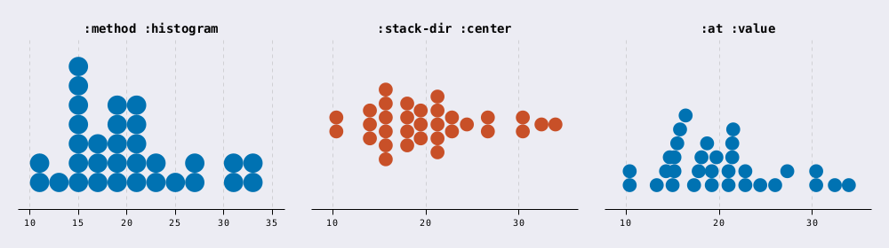
The left panel sets a fixed dot size and outlined squares; the right one sets :padding:
(plot/render-image (plot/arrange [{:data mtcars
:mapping {:x :mpg}
:charts [(chart/dotplot {:binwidth 1.5 :size 7 :shape \S :color [230 160 60]
:stroke-color :black :stroke-width 1})]
:labels {:title ":size 7, outlined squares"}}
{:data mtcars
:mapping {:x :mpg}
:charts [(chart/dotplot {:binwidth 1.5 :padding {:x [0.3 0.3]}})]
:labels {:title ":padding {:x [0.3 0.3]}"}}]
{:columns 2})
{:width 800 :height 280})
17.7 Rug plots
chart/rug draws a short line per value, along the panel’s edge or in one strip per level. Use it beside another chart to show where the values lie.
:mapping:x– The values of horizontal rugs, or the levels of vertical ones.:y– The levels of horizontal rugs, or the values of vertical ones; with no levels the chart draws one rug along the panel edge.:color– Splits the rows into groups, each in its own line colour.:group– Splits the rows into groups that look the same, dodged as other groups.
(plot/render-image {:data iris
:mapping {:x :sepal-length :y :sepal-width}
:charts [(chart/scatter) (chart/rug {:mapping {:y nil}})]}
{:width 600 :height 320})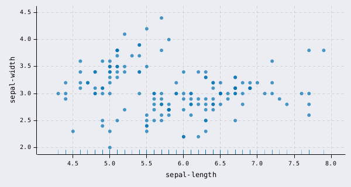
These options set the lines’ colour and width. The panels show the defaults with a rug per level, wider lines, and :padding:
(plot/render-image (plot/arrange [{:data iris
:mapping {:x :petal-length :y :species}
:charts [(chart/rug)]
:scales {:y {:reverse true}}
:labels {:title "defaults, a rug per level"}}
{:data iris
:mapping {:x :petal-length :y :species}
:charts [(chart/rug {:color [200 40 40 60] :line-width 3})]
:scales {:y {:reverse true}}
:labels {:title ":line-width 3"}}
{:data iris
:mapping {:x :petal-length :y :species}
:charts [(chart/rug {:padding {:x [0.3 0.3]}})]
:scales {:y {:reverse true}}
:labels {:title ":padding {:x [0.3 0.3]}"}}]
{:columns 3})
{:width 1000 :height 260})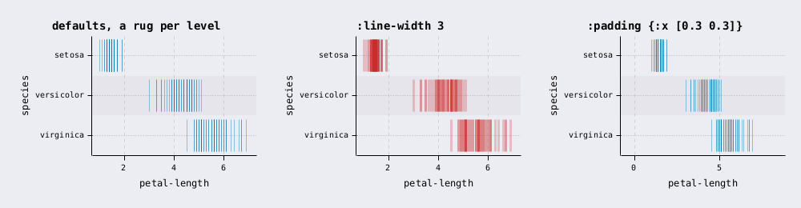
source: notebooks/reference/charts_per_level.clj